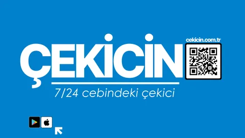
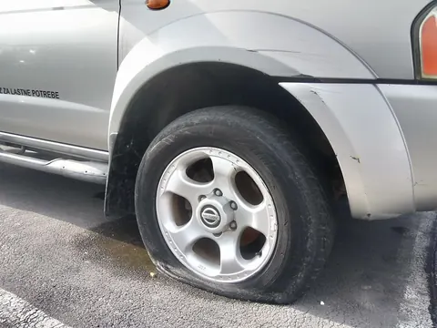
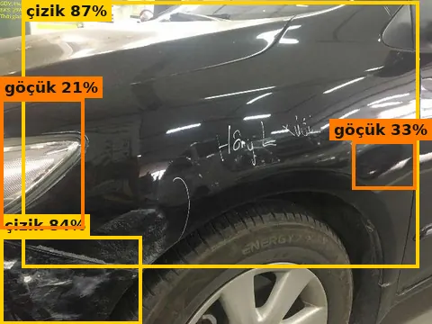
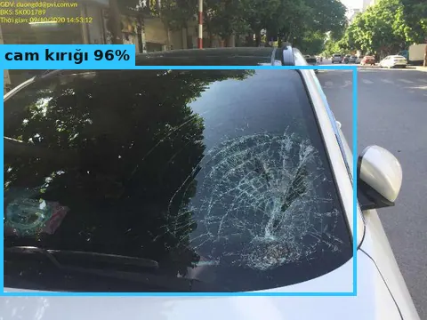
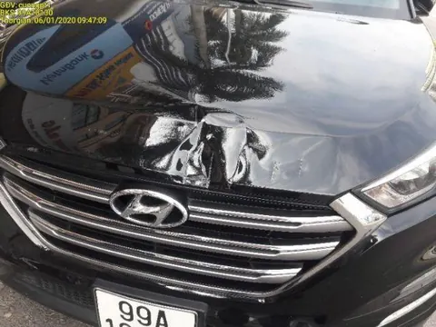
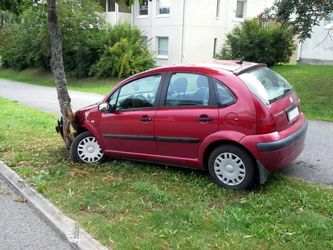
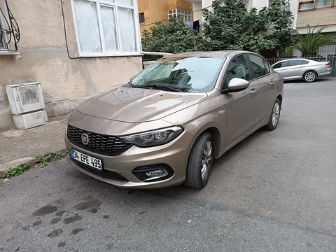
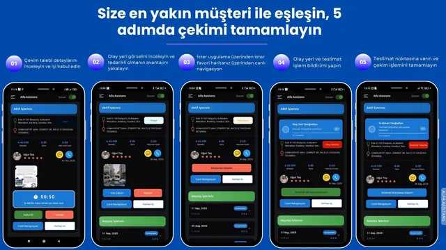

Alfa Asistans Güvencesiyle · 81 İlde Hizmet
Yolda mı kaldınız?Çekiciniz cebinizde.
Sürücüler için anında yol yardım, çekici esnafı ve taşıyıcılar için dijital iş yönetimi. 81 ilde canlı konum takibi ve kesintisiz iletişim imkanı.
81 İl Kapsama
7/24 Canlı Destek
Anlık Konum Takibi
Güvenli İletişim
81İl Kapsama Alanı
7/24Kesintisiz Hizmet
TekDokunuşla Çağrı
CanlıKonum ve İletişim
Çekicin için yapay zekâ demosu · Ekim 2026
İstenen yapay zekâ modülleri: neler hazır?
Çekicin ekibinin istediği modüllerin çalışan demoları. Hepsi tarayıcıda çalışır; modeller ve veriler Hugging Face'te açık. Henüz mobil uygulamada değiller.
🤖Telegram AI asistanı
Fotoğraf → hasar → 3 soru → çekici mi yol yardımı mı → en yakın servis. Sesli mesajı da anlar.
Canlı📷Hasar tespiti
Fotoğraftan hasarı ve hasarlı parçayı bulur. YOLO11m modeli 1000 fotoğrafla test edildi.
Demo hazır %70💰Parça ve kaporta maliyeti
Tamir, boya veya değişim önerir ve TRY aralığı verir. Aralık, 1.100 gerçek ilanın %58'ini kapsıyor.
Kısmen hazır %55🏪Yedek parça tedarikçileri
Fiyat veritabanı: 149 araç tipi için 3.718 ilan, kontrollü parça fotoğrafları ve satıcı bağlantısı; yakındaki parçacılar haritada.
Kısmen hazır %60🎙️Sesli müşteri yönlendirme
Konuşmayı yazıya çevirir, yanıtı SSS'ten bulur ve sesli okur. LLM ile yönlendirme sonraki adım.
Kısmen hazır %55⛽Yakındaki ücretsiz hizmetler
Akaryakıt, şarj istasyonu, lastikçi ve çilingir: OpenStreetMap ile ücretsiz.
Demo hazır %80🌍Bekleme süresi, emisyon, güvenlik
Atama simülatörü, merkezi senaryo: bekleme −%62, CO₂ −%25, ikincil kaza riski −%28.
Simülasyon %30🇪🇺COP31 ve AB ortaklığı
COP31 takvimi (10 Kasım Enerji ve Ulaşım günü) ve Eurostars / TÜBİTAK için ortak profili.
Plan hazır
📄 PDF + Video · %58
AI Lab'i aç
Çevre ve COP31
Uygulama incelemesi ve projeler
Modeli test et
12 senaryo + video
Simülasyon sonuçları varsayımlara dayanır; gerçek etki Çekicin verisiyle yapılacak bir pilotla ölçülmelidir.
● Yeni · Telegram'da canlı demo
Çekicin AI Asistan: fotoğraf gönderin, doğru yardımı 30 saniyede alın
Müşteri aracın fotoğrafını gönderir. Yapay zekâ hasarı bulur, 3 kısa soru sorar, çekici mi yol yardımı mı gerektiğini söyler ve en yakın uygun servisi gösterir. Sesli mesajla da soru sorulabilir.

🔍 Ön değerlendirme
• Lastik · inik lastik (orta)
• Çamurluk · çizik (hafif)
💰 Tahmini: 10.400–16.250 ₺
• Lastik · inik lastik (orta)
• Çamurluk · çizik (hafif)
💰 Tahmini: 10.400–16.250 ₺
🛞 Tekerlekler dönüyor ve lastikler sağlam mı?
EvetHayırBilmiyorum
🛞 Önerim: Yol yardımı — lastik
📍 En yakın lastikçi: 0,4 km · ➡️ Yol tarifi
📍 En yakın lastikçi: 0,4 km · ➡️ Yol tarifi
🎙 0:06 · "Yedek lastiğim yok, ne yapmalıyım?"
- 📷Fotoğraf0 sn
Telegram'dan (yakında WhatsApp) aracın fotoğrafı gönderilir.
- 🧠Hasar tespiti5–14 sn
Bulut görüntü modeli parçayı, hasarı ve tahmini maliyeti çıkarır.
- ❓3 kısa soru~15 sn
Çalışıyor mu? Tekerlekler sağlam mı? Duman/sızıntı var mı?
- 📍Karar + en yakın servis~1 sn
Çekici, akü takviyesi, lastik yardımı ya da servise sürüş; 5 yakın nokta ve dispeçer özeti.
Telegram'da dene
t.me/Cekicin_bot
✓ Telegram: canlı⏳ WhatsApp: altyapı hazır, Meta hesabı gerekli✓ Sesli mesaj✓ TR · EN · FA…
Ölçülen sonuçlar
Hasar yakalama1000 fotoğraflık bağımsız test, hasarlı fotoğraflar
Yanlış alarmHasarsız araçlarda; ne kadar düşükse o kadar iyi
12 gerçek senaryo10 doğru, 2 kısmen doğru (gece, kar, uzak çekim dahil)
Bekleme süresiAtama simülasyonu, merkezi senaryo (pilotla ölçülecek)
Örnek testler: model ne gördü?





📷 Kendi fotoğrafınla dene
12 senaryonun tamamı
1000 fotoğraf raporu
📈 Hasar AI 2.0: gidişat ve testler
Ön değerlendirmedir, ekspertiz raporu değildir. Fiyatlar örnek değerlerdir. Demo bot çekici talebini kendisi iletmez; gerçek talep için 0850 474 23 23. Fotoğraf ve ses kaydı saklanmaz.
Araç Sahipleri İçin
Çekicin Müşteri Uygulaması
Yolda kaldığınızda çağrı merkezinde beklemeden, adımları takip ederek saniyeler içinde çekici talebi oluşturun.
1
Talep Türü
Poliçe kapsamındaki yardımı seçin veya doğrudan ücretli hizmet talebi oluşturun.
2
Araba / Plaka Bilgisi
Plakanızı girerek poliçe teminatlarınızı ve uygun servisleri otomatik sorgulayın.
3
Durum / Olay Bilgisi
Arıza veya kaza durumunu, araçtaki yolcu sayısını belirterek doğru aracın yönlendirilmesini sağlayın.
4
Aracın Fotoğrafı
Aracın mevcut durumunu fotoğraflayarak çekici ekibinin hazırlıklı gelmesini sağlayın.
5
Servis Seçimi
Aracın götürüleceği yetkili/özel servisi veya teslim noktasını haritadan belirleyin.
6
Onay ve Çağrı
Özet bilgileri kontrol edip talebinizi doğrudan sisteme iletin.
7
Canlı Takip
Atanan çekicinin gelişini haritadan canlı izleyin, sürücüyle direkt mesajlaşın.
+
Acil Kaza Bildirimi
Kaza anında konumunuz otomatik alınır; hızlıca fotoğraf ekleyip tek tıkla çekici isteyebilirsiniz.
Çekici Sürücüleri ve Firmalar İçin
Diji Alfa — Çekici & Tedarikçi Paneli
Çekici esnafı ve araç taşıma filoları için özel olarak tasarlanmış dijital iş yönetim platformu. İşleri anında görün, kabul edin ve kazancınızı yönetin.
✓ 5 Adımda Taşıma Operasyonu: Çağrıyı kabul et, konuma git, aracı yükle, teslim et ve işi tamamla.
✓ Dahili Navigasyon: Harita uygulamalarıyla tam entegre kaza/arıza noktasına en hızlı rotasyon.
✓ Cüzdan & Kazanç Takibi: Tamamlanan işleri, biriken bakiyeyi ve geçmiş gelirleri anlık izleme.
✓ Fatura & Evrak Yönetimi: Uygulama üzerinden fatura yükleme, toplu gönderim ve süreç itirazları. YENİ
✓ Müşteri İletişimi: Müşteriyle sistem üzerinden mesajlaşma ve operasyonel destek.

Öne Çıkan Özellikler
Sürecin Her Aşamasında Şeffaflık
Aracınızın taşınma sürecinden, tedarikçi operasyonuna kadar tüm detaylar dijital kontrolünüz altında.
Canlı Konum Takibi
Size yönlendirilen çekicinin nerede olduğunu ve ne zaman varacağını harita üzerinden anlık takip edin.
Uygulama İçi Mesajlaşma
Çekici sürücüsü ile uygulama üzerinden haberleşin. İletişim kayıt altında kalarak güvenliği sağlar.
7/24 Canlı Destek YENİ
İhtiyaç duyduğunuz her an müşteri hizmetleri ekibimize uygulama içinden ulaşıp destek alabilirsiniz.
Görsel Belgeleme
Aracın ilk halini ve teslim anını sistem üzerinden fotoğraflayarak şeffaf bir taşıma süreci yürütün.
Otomatik Poliçe Sorgulama
Kasko veya trafik sigortası poliçenizdeki çekici hakkınızı saniyeler içinde görüntüleyin.
Yakındaki Hizmet Noktaları
Bulunduğunuz konuma en yakın yetkili servis, sanayi, ekspertiz ve akaryakıt istasyonlarını görün.
Teknik ayrıntılar: yol haritası, AI Lab ve akademik çalışmalar
Yapay Zekâ Yol Haritası
Akıllı Yol Yardımına Doğru
Çekicin bugün hızlı çekici eşleştirme ve canlı takibe odaklanıyor. Aşağıdaki modüller, uygulamayı hasar tespiti, maliyet tahmini ve sesli asistanla akıllı bir yol yardım platformuna dönüştürmek için planlanan adımlardır.
Kameradan hasar tespiti
Bugün"Kaza yaptım" akışında yalnızca fotoğraf yükleme.
PlanSunucu tarafında YOLOv8/YOLO11 veya Mask R-CNN ile kırık cam, göçük, patlak lastik gibi hasarların otomatik tespiti.
Değişim / onarım kararı ve maliyet tahmini
BugünYok.
PlanHasar tespiti + parça veritabanı + fiyat tahmin modeli ile parça bazında değişim/onarım önerisi ve tahmini tutar.
Yedek parça tedarikçisi ve fiyatı
BugünYok.
PlanParça fiyat API'leri ve yakındaki tedarikçilerin aranması.
Yapay zekâ ile sesli müşteri rehberliği
BugünBasit metin tabanlı sohbet botu.
PlanKonuşmayı metne çevirme (STT) + LLM (yerel veya API) + metni sese çevirme (TTS); çağrı merkezinin yükünü azaltır.
Ücretsiz yakın nokta araması
BugünSınırlı "en yakın" gösterimi.
PlanOpenStreetMap / Overpass ile servis, şarj istasyonu, lastikçi gibi noktalar ücretsiz. Yukarıdaki Canlı Harita bu altyapıyı zaten kullanıyor.
Bekleme süresi ve çevresel etki
BugünAçık simülatör hazır: %70 bekleme azalması ancak bugünkü süreç yavaş ve parçalıysa mümkün; gerçek pilot verisi gerekiyor.
PlanGerçek müdahale süresi verisi toplanır ve bir emisyon modeliyle ölçülür. COP31 ve Avrupa fonları için önemlidir.
Önerilen uygulama sırası
- Hasar tespiti ve maliyet tahminini Python arka ucunda pilot olarak başlatın.
- Çağrı merkezinin yükünü azaltmak için sesli asistanı yerel bir LLM veya hafif bir API ile kurun.
- Yakın nokta aramasını tamamen ücretsiz OpenStreetMap ile sürdürün.
- %70 iddiasını kanıtlayabilmek için gerçek müdahale süresi verisi toplayın.
Açık kaynak referanslar (GitHub)
Araç hasar tespiti
- basel-ay/Automated-Car-Damage-Detectionlisans yok
Mask R-CNN - ReverendBayes/YOLO11m-Car-Damage-DetectorMIT
YOLO11m - thehrsr/CAR-DAMAGE-DETECTIONözel lisans
Flask + Mask R-CNN
Hasarlı parça + onarım maliyeti
- sahilkhan-7/accident-damage-detectionlisans yok
YOLOv8 + cost - artemxdata/Car-Damage-Assessment-AIMIT
YOLOv8 · CarDD
Yapay zekâ ile sesli rehberlik
- sanikasalunke/AI-Customer-Support-Agent-with-RAG---Voice--…lisans yok
Whisper + LLM + Coqui TTS + RAG - KoljaB/RealtimeVoiceChatlisans yok
Realtime STT → LLM → TTS - Sharan-Kumar-R/Voice-Chat-Botlisans yok
Deepgram + Groq
Ücretsiz yakın nokta (POI) araması
- frafra/poi-around-meAGPL-3.0
OSM + Overpass - Nuraj250/NearbyNowlisans yok
React + Leaflet + OSM
Yedek parça fiyat tahmini
- Riteshbhandarii/DPPMMIT
ML price model
"Lisans yok" olarak işaretli depolar yalnızca referans içindir: kodlarını kullanmak için yazarından izin gerekir. AGPL-3.0 lisanslı kod ise kaynak kodun paylaşılmasını gerektirir.
Çekicin Asistanı'nı deneyin (Hugging Face)
Bu bölüm bir yol haritasıdır. Modüllerin çalışan pilot sürümleri aşağıdaki AI Lab'de; mobil uygulamada henüz yoklar.
Çekicin AI Lab · Canlı Demo
Yapay zekâ modülleri artık deneyebileceğiniz bir demoda
Yol haritasındaki modüllerin çalışan pilot sürümleri. Varsayılan olarak hepsi tarayıcınızda çalışır ve fotoğrafınız cihazınızdan çıkmaz. İsterseniz tek tıkla bulut yapay zekâdan ikinci görüş alabilirsiniz.
📷
Hasar tespiti
İki model birlikte çalışır: YOLO11n hasarlı parçayı (14 sınıf), CarDD ile eğitilmiş YOLO11m modeli hasarın türünü (göçük, çizik, çatlak, cam, lamba, lastik) bulur. 1000 fotoğrafla test edildi.
Dene → 💰Tamir/değişim ve maliyet
Hasarın büyüklüğüne göre boyasız düzeltme, düzeltme+boya veya değişim önerir ve TRY aralığı hesaplar.
Dene → 📍Tedarikçiler ve yakın noktalar
Yedek parçacı, lastikçi, şarj, oto cam, çilingir: OpenStreetMap ile ücretsiz.
Dene → 🎙️Sesli asistan
Whisper konuşmanızı yazıya çevirir, çok dilli bir anlam modeli SSS'ten yanıtı bulur, yanıt sesli okunur.
Dene → ☁️Bulut yapay zekâ API
Llama 4 Scout (17B) büyük görüntü modeli, cihazdaki hasar modelinin sonucuyla birleşir (hibrit). 12 senaryoluk testte uzak, gece ve karlı kaza fotoğraflarında da hasarı buldu. Çekici önerisi yalnızca bir öneridir; karar sorularla verilir.
Dene → 🌱Çevre, güvenlik ve COP31
Çekici yönlendirme simülatörü: bekleme süresi, ikincil kaza riski ve CO₂e; pilot ölçüm planı, COP31 ve AB ortaklıkları.
Dene →Pilot demodur; mobil uygulamaya henüz eklenmedi. Maliyetler örnek değerlerdir ve gerçek tekliflerle kalibre edilmelidir.
Akademik çalışmalar
Fotoğraftan araç hasarı tespiti: kodu açık makaleler
CarDD: A New Dataset for Vision-Based Car Damage Detection
VehiDE: A Large-Scale Dataset for Vehicle Damage Evaluation
MARS: Mask Attention Refinement with Sequential Quadtree Nodes for Car Damage Instance Segmentation
CrashCar101: Procedural Generation for Damage Assessment
CrashSplat: 2D to 3D Vehicle Damage Segmentation in Gaussian Splatting
Sıkça Sorulan Sorular
Aklınıza takılan sorular ve yanıtları
Mobil uygulamaları indirmek ücretsizdir. Taşıma ücretleri poliçeniz kapsamına veya talep türünüze göre belirlenir.
Çekicin, Alfa Asistans altyapısıyla hizmet veren, yolda kalan araç sahipleri ile en yakın çekicileri dijital ortamda buluşturan mobil platformdur.
Evet. Poliçeniz olmasa dahi uygulama üzerinden doğrudan plaka ve konum bilginizle bağımsız çekici talebi oluşturabilirsiniz.
Çağrınız kabul edildiğinde sürücünün canlı konumu harita üzerinde görüntülenir. Ayrıca sürücünün yola çıkışı ve varış süresi bildirim olarak iletilir.
Çekici esnafı ve firmalar "Diji Alfa" uygulamasını indirip üyelik başvurusu yaparak ağımıza katılabilir ve bölgedeki çekici taleplerini alabilirler.
Canlı Harita
Aracınızın Konumu ve 10 Yol Yardım İhtiyacı
Haritada aracınızın konumunu işaretleyin; çekiciden akü takviyesine, lastikten yakıt ikmaline kadar 10 farklı ihtiyaç için çevrenizdeki gerçek hizmet noktalarını görün.
Müşteri İletişim Center
Yolda kaldığınızda uygulama üzerinden hızlıca talep oluşturabilir ya da doğrudan arayabilirsiniz.
0850 474 23 23 0216 251 43 11 info@cekicin.com.tr E-posta GönderOfislerimiz
İstanbul Genel Merkez:
Altınşehir Mah. Alev Sok. No:1 Kat:2 Ümraniye / İstanbul
Elazığ R&D / Teknokent:
Çaydaçıra Mah. Prof. Dr. Nuri Orhan Bul. Fırat Teknokent No:9/201 Elazığ
Çekicin bir Alfa Asistans kuruluşudur.